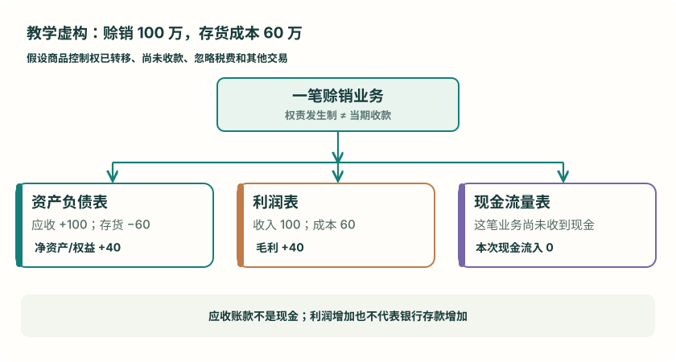
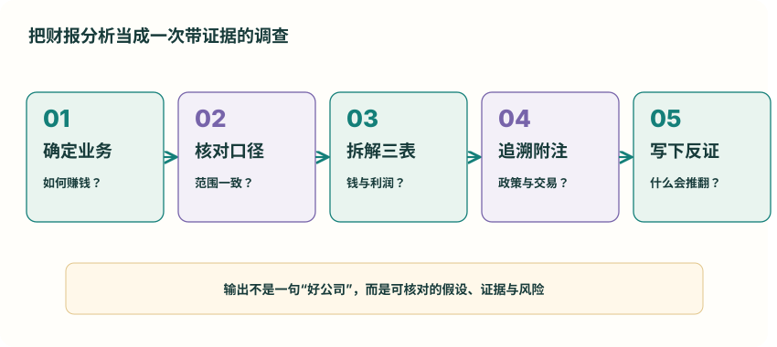

财报分析：一笔赊销如何走过三张表
收入已经确认，账户却没有收到钱。财务报表不是三份互不相干的数字清单，而是同一商业交易在不同维度的记录。
利润上升，为何现金可能没有变化？
想象一家制造企业向客户交付了一批货物，合同约定下个月付款。企业已经完成履约，却暂时没有收到现金。这个简单事实会同时留下三种痕迹：一项应收款、一个会计利润和暂时为零的收款。分析者首先需要区分交易已经发生、会计上何时确认、现金何时结算这三个时点。
依据权责发生制，收入确认取决于适用会计准则中的履约及控制权转移等条件，并非仅凭签署合同、发票开具或货物发出。现金流量表则聚焦报告期内现金及现金等价物的收付。两者并不矛盾，只是回答不同问题。

单项利润可以真实但尚未兑现成现金；单期经营现金流为负也不自动说明收入虚假。必须核对账期、营运资本、行业特征及连续多个期间。
先统一报表语言：时点、期间、口径
资产负债表描述特定日期的资源、义务与剩余权益；利润表描述一段期间收入、费用及利得损失的结果；现金流量表说明现金如何在经营、投资和筹资活动之间流动。所有者权益变动表解释权益结构变化，附注补足政策、分解明细、风险和承诺。财政部 2026 年修订列报准则明确这五部分同等重要，财政部财会〔2026〕11 号修订列报准则分批实施：境内外同时上市及符合规定的境外上市企业自 2027-01-01 起，其他境内上市企业自 2029-01-01 起，非上市企业自 2030-01-01 起；允许提前执行。
这个等式是计量和列报的恒等关系，不意味着每项资产都能够随时以账面金额卖出。比较企业时，还要检查是否采用合并报表或母公司报表、单位是否为元/万元/亿元、期末日及比较期间是否一致。对于银行、保险等行业，报表列报和指标含义需要按行业业务模式重新解释。
存量（Stock）
12 月 31 日账面应收账款 200 万：一个日期的余额。
流量（Flow）
1 月 1 日到 12 月 31 日收入 1,000 万：一段期间的累计发生额。
从问题出发的五步分析法
与其先计算几十个财务比率，不如先提出一个具体可检验的问题。例如：为什么收入增长 30%，经营现金流却下滑？接下来围绕这件事组织证据。

理解业务：客户是谁？产品如何交付？付款条件、退货义务和季节性是什么？
固定口径：合并范围、币种、会计期间和会计政策是否变化？
核对三表：收入增长是否带来应收、存货、合同资产或经营现金流的对应变化？
查看附注：收入履约、账龄、关联交易、受限资金是否支持初步判断？
寻找反证：客户账期调整、扩张备货、并表变化等能否合理解释异常？
去哪里找原始数据？
中国上市公司以交易所和法定信息披露平台公布的定期报告及其审计报告、附注为基准材料。2021 版《上市公司信息披露管理办法》规定年度报告应在会计年度结束后四个月内、半年报在上半年结束后两个月内披露；季度报告期限还应结合现行交易所规则核对。与媒体摘要相比，原始报告能提供完整口径和被摘要遗漏的风险因素。
研究海外上市公司时，使用所在地监管机构的正式报告，如 SEC 的 10-K、10-Q，并注意美国会计准则与中国企业会计准则在具体确认和列报上的差异。IFRS 18 自 2027 年起生效；中国新列报准则按企业类型在 2027、2029、2030 年分批实施（允许提前执行），将分别影响其后的呈现与比较，因此不能拿跨准则的同名行项目直接等量比较。
交互实验：收入与收款的时滞
下面先只观察同一笔业务的收入和现金收款。假设交易履约已完成，且不涉及税费、预付款和期初应收；如果两者不相等，差额就需要沿应收账款或合同资产等账户追踪。
动手调整数字
修改输入观察对应关系；这是刻意简化的教学算例，不自动覆盖税金、特殊合同安排或其他现金流调整。
收入与“销售商品、提供劳务收到的现金”不能在真实报表中直接一一相减：增值税、合同负债、上期回款、退货和合并范围变动都会造成差异。交互算例只用来建立直觉。
给自己的一次财报审阅
假设一家企业收入由 800 增至 1,100，期末应收由 130 增至 310，经营现金流从 150 降至 20。问题不是马上判定它造假，而是优先找出：新增客户的信用期限、应收账款账龄与坏账准备、合同资产、经营收款时间分布以及并表变化。
自测：这三个数字能直接证明收入虚增吗？点击展开
不能。它们只能指向收入兑现速度可能变慢。进一步需要外部客户信息、期后回款、附注和跨期数据；也可能是业务增长、赊销政策变化或收款季节性所致。
本章结论：财报分析是对交易和现金过程的交叉验证，而非给某一指标贴上“好/坏”的标签。
官方资料与适用范围
以上示例数据均为教学虚构。法规与会计准则可能按年度修订，实际分析时应以公司报告期间适用版本为准。